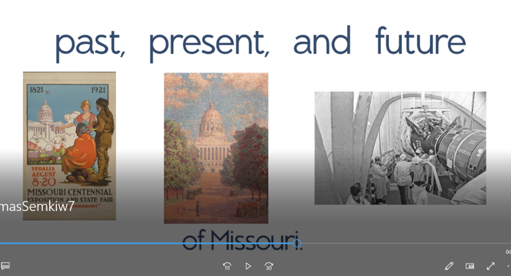
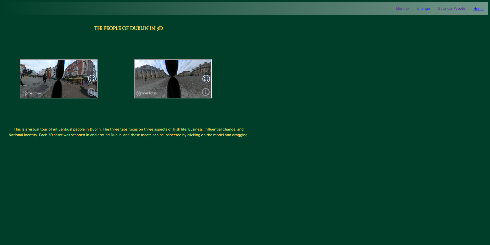

First project is a video created for the Missouri bicentennial celebration. It was created using Adobe After Effects, using 3D camera techniques to create interesting visual effects.
The second project is a personal project worked on in my free time. This Adobe After Effects project uses camera tracking to create a "follow flight", making a line that follows a disc through the air. This technique is a common one in modern disc golf coverage.

The third project is like the second, another Follow Flight. This video uses the same techniques: Compositing, Camera Tracking, etc.
